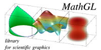
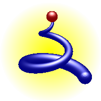
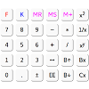
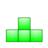
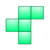
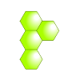
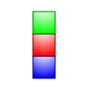
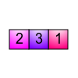

☰
☰
|
 |
 |
 |
 |
 |
 | |
|
 |
 | |||||
| MathGL manual [EN] | MathGL док. [RU] | MathGL + JavaScript | MK-61 emulator |
Games | ||
MathGL is ... ¶

- a library for making high-quality scientific graphics under Linux and Windows;
- a library for the fast data plotting and data processing of large data arrays;
- a library for working in window and console modes and for easy embedding into other programs;
- a library with large and growing set of graphics.
Now MathGL has more than 35000 lines of code, more than 55 general types of graphics for 1d, 2d and 3d data arrays, including special ones for chemical and statistical graphics. It can export graphics to raster and vector (EPS or SVG) formats. It has Qt, FLTK, OpenGL interfaces and can be used even from console programs. It has functions for data processing and script MGL language for simplification of data plotting. Also it has several types of transparency and smoothed lightning, vector fonts and TeX-like symbol parsing, arbitrary curvilinear coordinate system and many over useful things. It can be used from code written on C++/C/Fortran/Python/Octave and many other languages. Finally it is platform independent and free (under GPL v.2.0 license).
There is a forum where you can ask a question or suggest an improvement. However the MathGL group is preferable for quicker answer.
For subscribing to MathGL group you can use form below
About LGPL and GPL licenses.
Generally, MathGL is GPL library. However, you can use LGPL license for MathGL core and widgets if you don’t use SWIG-based interfaces and disable GSL features. This can be done by using lgpl option at build time. According this, I’ve added the LGPL win32 binaries into Download page.
Latest news
- 3 October 2022 New version (v.8.0.2) of MathGL is released. There are new commands (mode for Poisson equation solving, histl for advanced histogram, jumps in ode, robust approximations in fit and fits) and minor bugfixes and improvents.
- 12 January 2022 New version (v.8.0.1) of MathGL is released. There are increase accuracy at line segment skipping, changes in SOVERSION numbering, minor spelling fix (thanks to Rafael Laboissière).
- 1 January 2022. New version (v.8.0) of MathGL is released. There are change version numbering according Debian rules, and add accurate line segment and quadrangle/triangle face cutting at axis border crossing.
- 8 December 2021. New version (v.2.5) of MathGL is released. There are big improve in formula evaluation (user-defined function, summation and product, new functions for data interpolation), new plot kind dcont and lines, set of functions for random distributions, new data handling functions (like, keep), extend ode to solve PDE/cascade/etc, add mask for most of plotting functions and bugfixes, which denoted here.
- 8 July 2019. New version (v.2.4.4) of MathGL is released. There are new minmax for positions of local minimums and maximums, add conts for coordinates of contour lines, extend formula evaluation to read and interpolate data files.
- 17 May 2017.
New version (v.2.4) of MathGL is released. There are
mgllabexecutable, string manipulation in MGL, new functions, plot types and styles, translation to Russian usinggettextand bugfixes, which denoted here.
There is detailed news list. Sourceforge project page here.

Javascript interface was developed with support of DATADVANCE company.